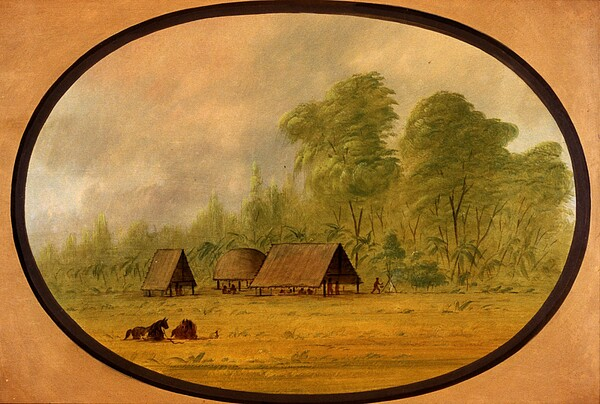

During the mid-19th century, George Catlin created two large collections of paintings featuring Indian portraits, genre scenes, and western landscapes. The first collection, which he called his "Indian Gallery," included more than 500 works completed during the 1830s. Most of the surviving paintings from this group are now at the Smithsonian American Art Museum in Washington, DC. During the 1850s and 1860s, Catlin created a second collection, numbering more than 600 works, which he called his "Cartoon Collection." The surviving works from this collection were acquired by the American Museum of Natural History in New York in 1912. Paul Mellon purchased more than 300 paintings from the Cartoon Collection when they were deaccessioned. In 1965, he gave 351 works from this collection to the National Gallery of Art. When Catlin exhibited the Cartoon Collection in New York in 1871, he published a catalog listing all the works. The catalog entries often included additional information about the subject of each painting. Catlin's catalog entry for this painting follows.
